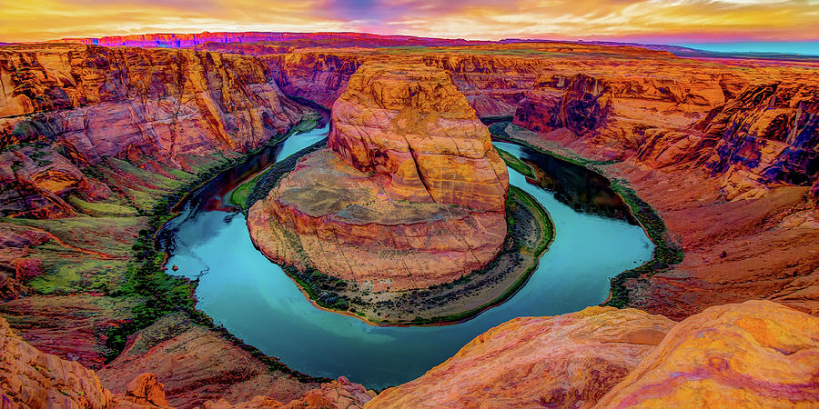
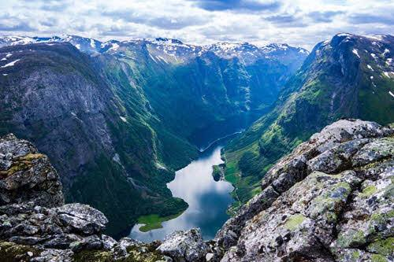
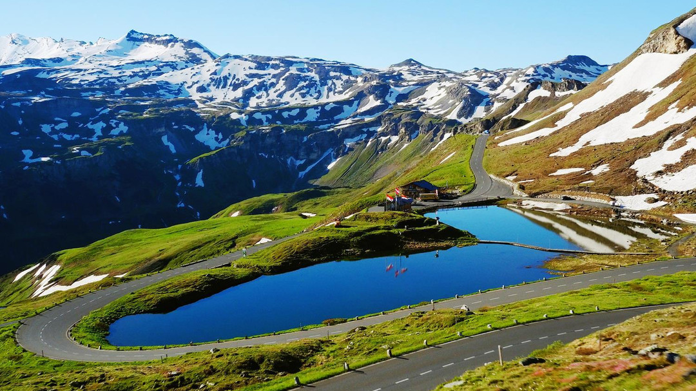
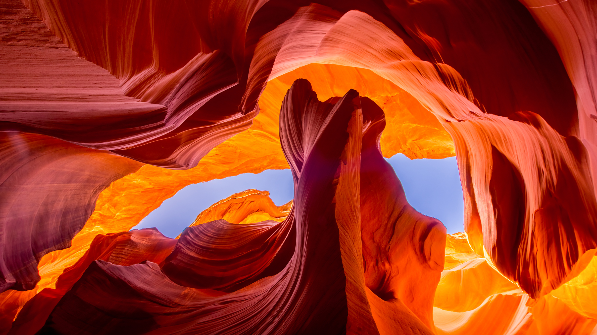
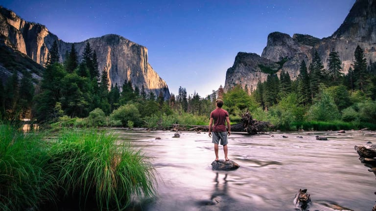
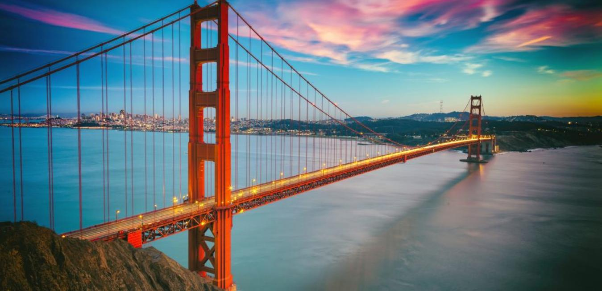

ABOUT
EXPLORE
JOURNAL
SEARCH

THE GREAT OUTDOORS
Explore the World
We seek to provide the most authentic content from athletes,adventures,explorers andtravellers around the world.Our long-term mission is to educate,inspire and enable all people to experience & protect wilderness.

Nærøyfjord
NORWAY

Grossglockner
AUSTIRA

Antelope Canyon
UNITED STATES
The Journal
Our favorite stories about public lands and opportunites for you to get involved in protecting your outdoor experiences.

MAY 30, 2017
An Unforgettable
If you only have one day to visit Yasomite National Park and you want to make the most out off it.

MAY 28, 2017
Symphonies in Steel
Crossing the Golden Gate Bridge from San Francisco, you arrive in Marin even before landingon solid ground.